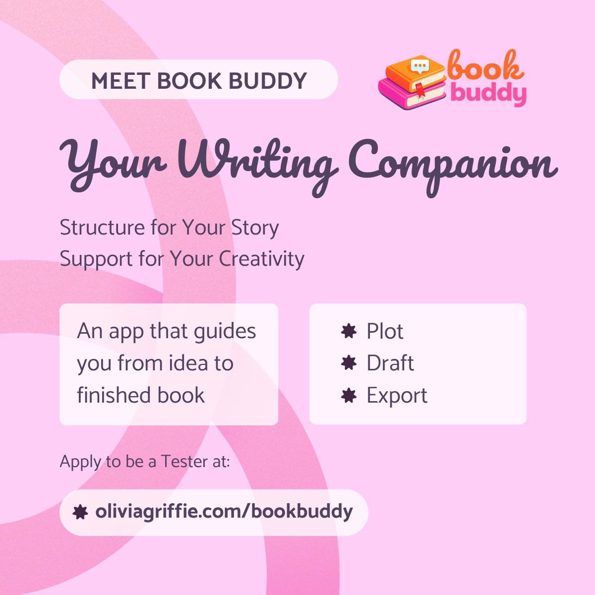

Modular structure that keeps creative energy moving
I focused on modular design and contextual continuity so writers can move through setup, planning, and drafting without the app feeling fragmented or overwhelming.
App Build
Book Buddy is a desktop writing application I designed and built in Electron to help authors move from early ideas to a finished manuscript without losing clarity, structure, or momentum along the way.

Desktop Writing App · Electron Beta
Book Buddy helps writers create a project, define genre and premise, build world details, shape characters, outline scenes, and move those decisions directly into chapter drafts. The experience is designed to reduce cognitive load by keeping each stage visible but focused, so writers always know where they are in the process.
My Focus
I designed the UX and UI, mapped the workflow architecture, and built the app experience in Electron with modular front-end code and Electron-compatible storage patterns that support drafting, autosave, and structured story data.
Current State
Book Buddy is currently in beta with one active project slot while multi-project functionality is being tested and expanded.
I focused on modular design and contextual continuity so writers can move through setup, planning, and drafting without the app feeling fragmented or overwhelming.
Book Buddy is currently in beta while multi-project functionality is being tested and expanded, with autosave, export support, and structured story data already in place.
The app opens with project setup so the writer can define genre, premise, and story direction before getting lost in details. From there, the interface branches into plot, character, scene, and drafting spaces that feel connected instead of siloed.
I focused on modular sections so writers only see the information needed for the step they are in. That keeps the workspace distraction-free while still making the larger manuscript structure feel close at hand.
Characters, scenes, and world-building notes are not isolated reference pages. They are designed to feed the drafting flow directly, helping authors turn planning work into chapter progress and daily writing momentum.
The visual language stays warm and encouraging, while the structure keeps the product grounded and usable for real manuscript work.
Writers need to feel that their work is safe and moving somewhere. Autosave, contextual panels, and PDF or DOC export help the product feel reliable enough for active manuscript work instead of a temporary brainstorming tool.